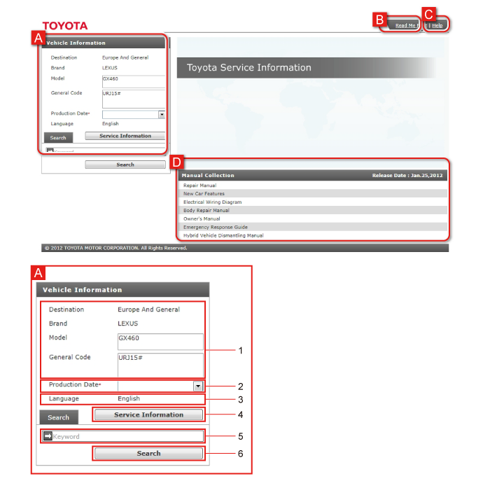
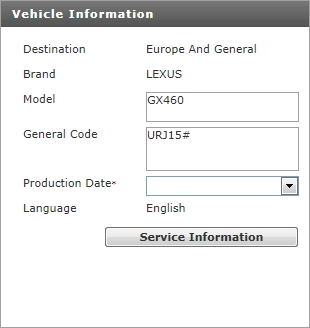

The Top screen can be used to select the applicable Production Date from the collected Service Information and display relevant manuals.
It is simple to search for relevant details from keywords.

| A | Vehicle Information Populate the applicable Production Date from the displayed manuals. |
|
|---|---|---|
| 1 | Destination, Brand, Model, General Code are displayed. | |
| 2 | Production Date selection field Select the applicable Production Date of manuals date corresponding to the Production Date of the vehicle. |
|
| 3 | Language English is displayed. |
|
| 4 | Service Information After populating the applicable Production Date, display corresponding manuals. |
|
| 5 | Keyword input field Input the keyword. |
|
| 6 | Search Select the applicable Production Date, then search for manuals relevant to the keyword. |
|
| B | Read Me First This section provides information, such as cautions and notices, about using this site. |
|
| C | Help Displays explanations about how to use this site and its functions. |
|
| D | Manual Collection Displays the manuals that are collected on this disk. |
|
Populate the applicable Production Date of manuals corresponding to the Production Date of the vehicle.
